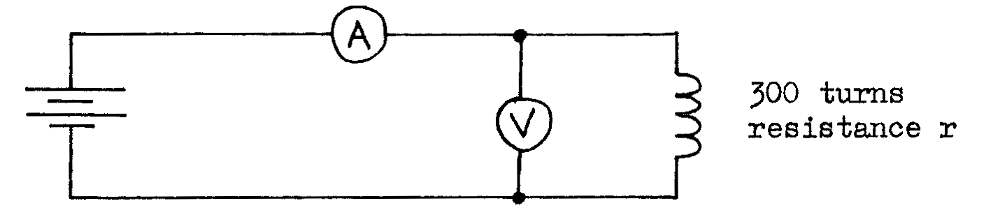
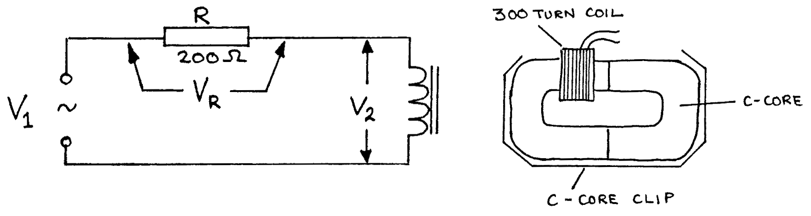
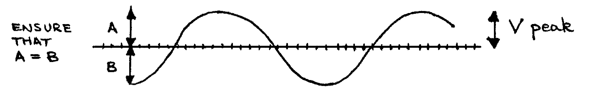
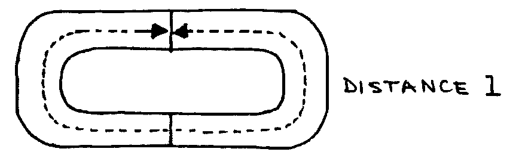
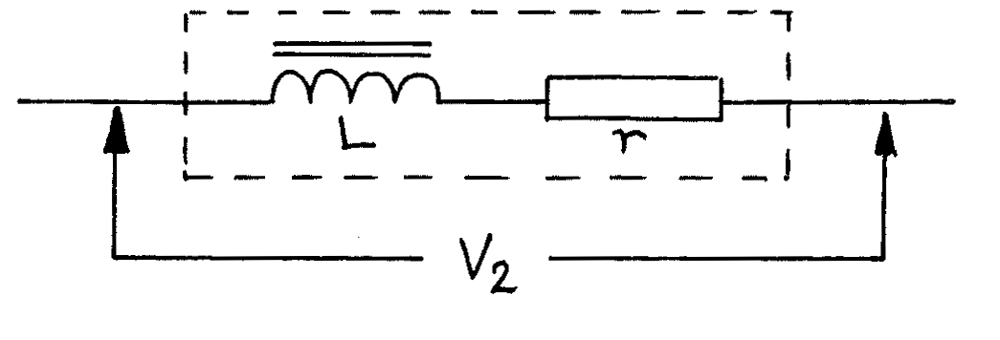

F6-1: Self Inductance in AC Circuits¶
Apparatus¶
300 turn coil; 2 iron C-cores; C-core clip; ammeter (\(0 - 1\text{Adc}\)); voltmeter (\(0 - 5\text{Vdc}\)); 3 batteries (\(3\text{V}\).; 2 \(\times 100\Omega\) resistors; CRO (oscilloscope); AC power supply; \(0.5\text{m}\) ruler; connecting leads (5 short); 1 sheet graph paper.
NB: This experiment requires mains electricity.
Procedure¶
- To find the resistance \(r\) of the coil, connect the following circuit and use the readings of the ammeter and voltmeter to calculate \(r\):

To find the inductance \(L\) of the coil with an iron core, connect the following circuit: 
Connect the CRO input to \(V_1\). Adjust the CRO so that \(V_1\) is about \(4\text{V}\), the supply being switched to AC. Adjust the CRO so that the AC waveform is seen clearly:

Carefully adjust the power supply so that the peak value of \(V_1\) as seen on the screen is \(4\text{V}\) peak.
- Now connect the CRO to measure \(V_R\) peak. Use this, and the value of R to calculate the value of \(I\) peak for the circuit.
- Use the CRO to measure \(V_2\) peak.
- Repeat a), b), and c), but using \(V_1\) of \(3.5, 3, 2.5, 2, 1.5, 1, 0.5, \text{ and } 0\) volt peak each time.
- Tabulate the values of \(V_R\) peak, \(V_2\) peak, and \(I\) peak.
- Measure the cross-sectional area of the iron core and the distance \(l\) around the centre of the pair of cores as shown below:

Theory¶
The coil with its iron core has an inductance \(L\), and the copper wire of the coil has a resistance \(r\). An equivalent circuit for the coil is:

The impedance of this combination of \(r\) and \(L\) is given by:
where:
and:
It is also possible to calculate \(L\) using data about the coil and its core:
where:
Analysis¶
- Plot a graph of \(V_2\) peak against \(I\) peak, and find the gradient.
- Use the gradient and \(\ref{eqn2}\) to find the value of \(Z\).
- Use \(\ref{eqn1}\) to find the inductance of the coil, \(L\).
- Use this value of \(L\), together with the other measured values, and \(\ref{eqn3}\), to find the relative permeability of this type of iron, \(\mu_r\).
- Look up values of \(\mu_r\) for different types of iron in a reference table and try to deduce the type of iron alloy used in your iron cores.
Questions¶
Use the values of \(R\), \(r\), and \(L\) above to calculate the current \(I\) peak when \(V_1 = 8\)V peak and \(f = 1\)kHz.
Use \(\ref{eqn3}\) to estimate \(L\) if the iron core is removed. Show that in this case \(Z \approx r\). Repeat Q1 using \(L\) for the coil without an iron core.
Briefly explain the energy changes in \(r\) and \(L\) when:
- The current is + and rising
- The current is a maximum +, and constant
- the current is + and falling
How can an inductor be constructed so that power losses are kept to a minimum (consider both the design of the coil and the core)?
Why is it desirable to keep power losses to a minimum in an inductor used in the tuning circuit of a radio receiver?
Prove that:
\[\qquad \frac {V_2 \text{ rms}}{I \text{ rms}} = \frac{V_2 \text{ peak}}{I \text{ peak}} \tag{from equation 2}\]Why in the experiment is \(V\) peak measured rather than \(V\) rms?
Sketch on the same graph curves of \(V\) and \(I\) for an inductor (with \(r = 0\)) which is connected to an AC power supply.
Explain carefully why \(V_1 \text{ peak} \neq V_R \text{ peak} + V_2 \text{ peak.}\)